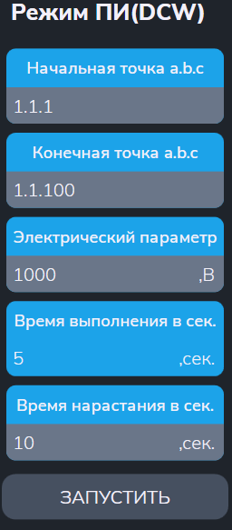

Утилита "Режим ПИ"
Утилита определяет погрешность задания переменного/постоянного напряжения с помощью высоковольтной испытательной установки.
- "Начальная точка a.b.c" и "Конечная точка a.b.c" - входы АСК, к которым подключается эталонный вольтметр;
- "Электрический параметр" - задание напряжения, которое должно быть выставлено на точки с помощью высоковольтной испытательной установки (в В);
- "Время выполнения в сек" - времня выполнения (в сек);
- "Время нарастания в сек" - время нарастания до заданного напряжения (в сек).

После ввода параметров меню автоматически выполняются следующие действия:
- Начальная заданная точка подключается к шине A1;
- Конечная заданная точка подключается к шине B1;
- Производится подключение высоковольтной испытательной установки к шинам A1,B1 и формирование заданного испытательного напряжения Uисп. В ходе теста производится измерение Uисп с помощью эталонного вольтметра.
- После появляется 2-ое меню (см. рисунок 2).
Введите напряжение на заданных точках, измеренное эталонным вольтметром. Это значение будет использоваться при расчете погрешности измерения.
- Производится измерение Uисп.
-
В протокол выполнения выводятся сообщения вида:
$TST1 Uд.б=100В+-5.00% Uизм=100.0В Погр=+0.00%
$TST1 Измерений:1 Все норма ПОГРmin=0 ПОГРmax=+0.00%